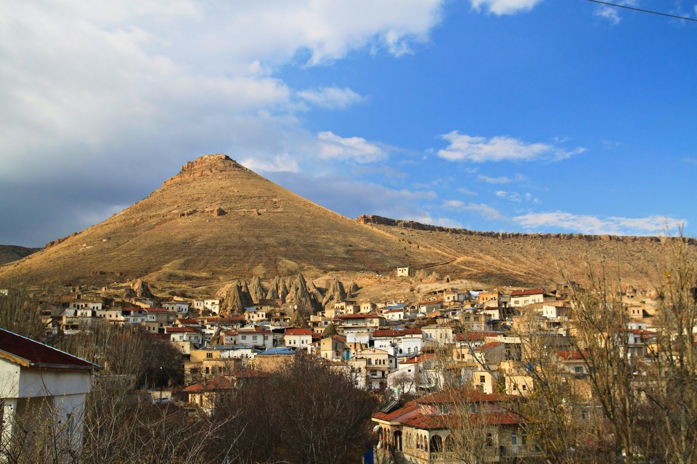
Ürgüp · NevşehirÜrgüp · Nevşehir
Taşkınpaşa
Damsa Vadisi’nin ortasında, bir yanda Eratna Beyliği’nin taş işçiliği, öbür yanda kayaya oyulmuş Bizans kiliseleri. Aynı köyde, yürüme mesafesinde.In the middle of the Damsa Valley: Eratnid stonework on one side, Byzantine churches cut into the rock on the other. One village, all within walking distance.
Köyü gezmeye başlaStart exploringTaşkınpaşa KöyüTaşkınpaşa Village
Taşkınpaşa, Nevşehir iline 36 km, Ürgüp ilçesine 18 km mesafede, Damsa Vadisi’nin ortasında kurulmuş bir köydür. Eski kayıtlarda adı Tamisa/Tamisos, 1926 yılı kayıtlarında ise Damsa olarak geçer. Köy bugünkü adını, buraya yerleşerek bir cami, bir medrese ve bir kümbet yaptırıp yöreyi ihya eden Emir Taşkın Paşa’dan almıştır. Köy nüfusu yaklaşık 400’dür.
Köyün doğusu peribacalarıyla bezeli yamaçlar, güneyi ise dağlarla çevrilidir; kuzeyinde, yaklaşık 1 km uzaklıkta Damsa Barajı yer alır. Halkın başlıca geçim kaynağı tarım ve hayvancılıktır: tarımda buğday ilk sırayı alır, onu patates ve fasulye izler. Bağları, bahçeleri ve Orta Anadolu’nun örf ve âdetlerini yaşatan dokusuyla köy, Kapadokya’nın az bilinen ama yoğun tarihli yerleşimlerinden biridir.
Taşkınpaşa lies in the middle of the Damsa Valley, 36 km from the city of Nevşehir and 18 km from the town of Ürgüp. In older records the village appears as Tamisa or Tamisos, and in the records of 1926 as Damsa. It owes its present name to Emir Taşkın Paşa, who settled here in the fourteenth century and revived the district by building a mosque, a medrese and a domed tomb. The village today has a population of about 400.
Slopes studded with fairy chimneys rise to the east of the village, while mountains close it in to the south; the Damsa Dam lies about one kilometre to the north. Farming and stock-breeding are the main sources of income: wheat comes first among the crops, followed by potatoes and beans. With its vineyards, its gardens and a way of life that still preserves the customs of central Anatolia, Taşkınpaşa is one of the least known yet most densely historical settlements in Cappadocia.
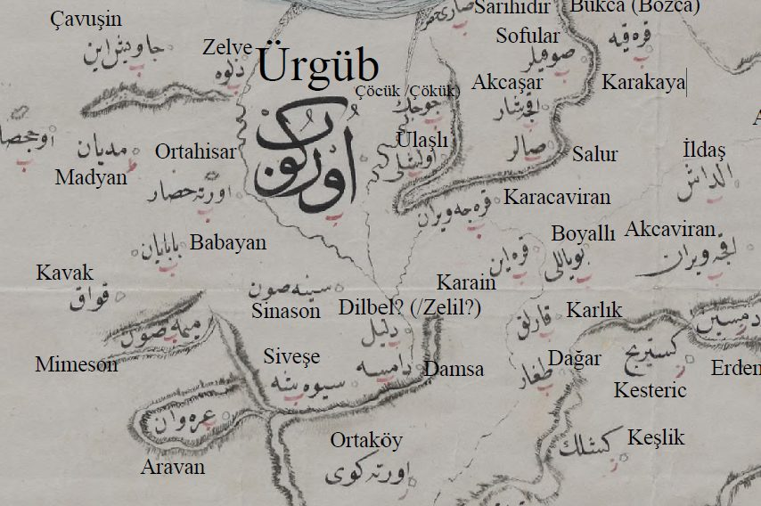
Damsa ve TamisosDamsa and Tamisos
Köyün eski adı olan Damsa, Bizans döneminde Tamisos olarak anılan piskoposluk merkezine dayanır. Fransız araştırmacı Guillaume de Jerphanion, adın ortaçağ piskoposluk listelerinde geçmediğini, ancak başka tanıklıklarla doğrulandığını belirtir: Sinasos’tan (Mustafapaşa) bir yazıt Tamisos piskoposu Barthélemy’nin adını verir; 1369 tarihli bir İstanbul Patrikhanesi kararı ise Tamisos piskoposunu Mokissos’a nakleder. Bölgenin bir başka merkezi olan Sobesos (bugünkü Şahinefendi) onuncu yüzyılda piskoposluk merkeziyken, sonraki dönemde Tamisos onun aleyhine gelişmiş ve on dördüncü yüzyılda piskoposluk buraya taşınmıştır.
Ad, Türkçe kaynaklarda Tamsa ve Damsa biçimlerinde yaşamayı sürdürmüştür. Bezm ü Rezm adlı eserde on dördüncü yüzyıl sonunda “Tamsa” vilayetinden söz edilir; Osmanlı vakıf kayıtlarında ise yerleşim “Tamsa Karyesi” adıyla geçer. Jerphanion’un işaret ettiği önemli bir nokta, aynı dönemde köyün hem kalabalık bir Müslüman hem de kalabalık bir Hristiyan cemaate sahip olması ve bu iki topluluğun yan yana, barış içinde yaşamış görünmesidir.
Damsa, the village’s former name, goes back to Tamisos, the name of a Byzantine episcopal see. The French scholar Guillaume de Jerphanion noted that the name does not appear in the medieval lists of bishoprics, yet is confirmed by other evidence: an inscription from Sinasos (Mustafapaşa) records Barthélemy, bishop of Tamisos, and a decision of the Patriarchate of Constantinople dated 1369 transfers the bishop of Tamisos to Mokissos. Sobesos, another centre in the region and today’s Şahinefendi, had been an episcopal see in the tenth century; in the following period Tamisos grew at its expense, and by the fourteenth century the bishopric had moved here.
The name survived in Turkish sources in the forms Tamsa and Damsa. The late-fourteenth-century chronicle Bezm ü Rezm speaks of the province of “Tamsa”, while Ottoman pious-foundation registers record the settlement as “Tamsa Karyesi”. One point Jerphanion emphasised deserves attention: in the same period the village had both a large Muslim and a large Christian community, and the two appear to have lived side by side in peace.
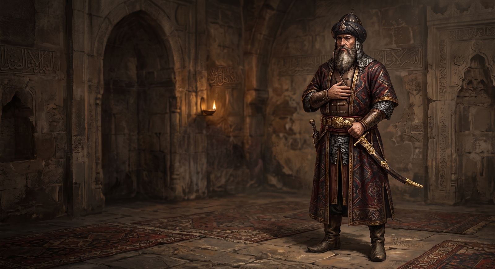
Taşkın Paşa kimdir?Who was Taşkın Paşa?
Taşkın Paşa hakkındaki en sağlam bilgi, 1351 (H. 751) tarihli bir satış senedinden gelir. Konya’ya bağlı Kumartaş Köyü’nü elli kırmızı altın dinara satın alan Taşkın Paşa, bu belgede “Emir Zahireddin Mahmud oğlu” olarak anılır. Babası Emir Zahireddin Mahmud, İlhanlı devletinin ileri gelen adamlarından olup 1329’da Anadolu valiliğine getirilmiş, adı Bünyan Ulu Camii’nin 1333 tarihli inşa kitabesinde de geçmiştir.
Damsa’daki vakfına ait 1353 (H. 753) tarihli bir vakfiyenin varlığı, 1476 tarihli Karaman Eyaleti Vakıfları Fihristi’nden bilinmektedir. Bu tarihlerde Niğde, Ürgüp, Kayseri ve Sivas’ın yönetimi Eratna Devleti’nin ilk hükümdarı Alâeddin Eratna’nın elindedir; dolayısıyla Taşkın Paşa, Ürgüp ve çevresinde görev yapan Eratnalı bir emirdir ve köydeki yapılar Eratna Beyliği dönemine, on dördüncü yüzyılın ortalarına tarihlenir.
Jerphanion, 1927’de köyde derlediği yerel geleneği aktarır: halk onu “Damsa mutasarrıflık iken Damsa’nın mutasarrıfı” diye anıyor, camiyi onun başlattığını, oğlunun tamamladığını anlatıyordu. Türbede kırmızı aşı boyasıyla yazılı 743 (1342/1343) tarihi ise Jerphanion’a göre eski bir kitabe değil, geç dönemde duvara yazılmış bir gelenek notudur.
The most reliable information about Taşkın Paşa comes from a deed of sale dated 1351 (AH 751). Having bought the village of Kumartaş near Konya for fifty red gold dinars, he is named in this document as the son of Emir Zahireddin Mahmud. His father was a leading figure in the Ilkhanid administration, appointed governor of Anatolia in 1329, and his name also appears in the 1333 building inscription of the Great Mosque of Bünyan.
A deed of endowment dated 1353 (AH 753) relating to his foundation at Damsa is known from the 1476 register of the pious foundations of the province of Karaman. At that time Niğde, Ürgüp, Kayseri and Sivas were governed by Alâeddin Eratna, the first ruler of the Eratnid state; Taşkın Paşa was therefore an Eratnid emir serving in the region, and the buildings in the village belong to the Eratnid period, to the middle of the fourteenth century.
Jerphanion recorded the local tradition he collected in the village in 1927: people remembered him as “the governor of Damsa, when Damsa was a governorate”, and said that he had begun the mosque and his son had completed it. The date AH 743 (1342/1343), written on the wall of the tomb in red ochre, is according to Jerphanion not an old inscription but a note of that tradition added much later.
Köy haritasıVillage map
Aşağıdaki haritada köydeki yapıların konumları işaretlidir. Bir işarete dokunduğunuzda ilgili bölüme gidebilirsiniz. Yeşil hat, İçeribağ Vadisi boyunca uzanan yaklaşık 800 metrelik yürüyüş güzergâhıdır.
The map below marks the location of each building in the village. Tap a marker to jump to the matching section. The green line traces the roughly 800-metre walking route along the İçeribağ Valley.
Külliye ve İslami eserlerThe complex and Islamic monuments
Köyün merkezinde, on dördüncü yüzyılın ortalarında kurulan Taşkın Paşa Külliyesi yer alır: cami, ona bitişik yazlık mescit ve avlunun doğusundaki iki türbe. Bunlardan yaklaşık beş yüz metre kuzeyde, köyün girişinde medrese bulunur. Külliye yapıları arasında Selçuklu külliyelerindeki gibi organik bir bağ yoktur; her yapı bağımsız tasarlanmış, kısa aralıklarla peş peşe inşa edilmiştir.
At the centre of the village stands the Taşkın Paşa complex, founded in the middle of the fourteenth century: the mosque, the adjoining summer prayer hall and two tombs on the east side of the courtyard. About five hundred metres to the north, at the entrance to the village, stands the medrese. There is no organic link between the buildings as there is in Seljuk foundations; each was designed independently and they were built one after another at short intervals.
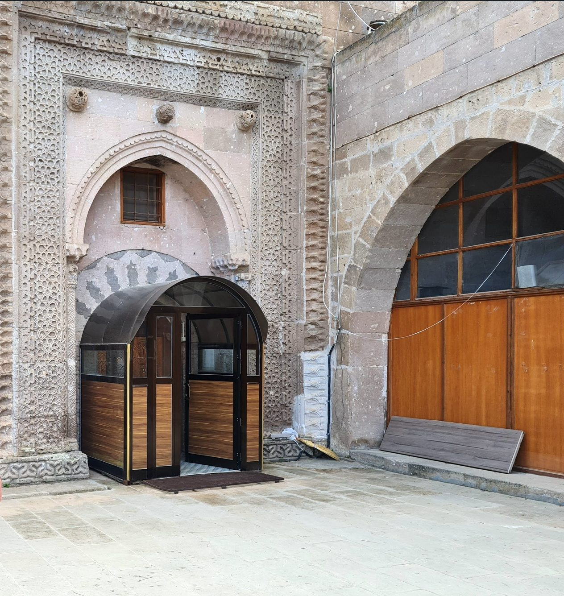
Taşkın Paşa CamiiTaşkın Paşa Mosque
Cami tamamen kesme taştan, kuzey–güney doğrultusunda dikdörtgen planlı olarak inşa edilmiştir. Harim, iki destek sırasıyla mihrap duvarına dik üç sahına ayrılır; devşirme mermer sütun başlıkları üzerine oturan payeler ve sivri kemerler beşik tonozlu üst örtüyü taşır. Mihrap önünde pandantiflerle geçilen bir kubbe yer alır. Kuzey cephedeki taçkapı, en dışta mukarnas şeritleri, ardından geometrik geçme bezemeli şeritler ve delik işi kabaralarla zenginleştirilmiştir.
Caminin en dikkat çekici ayrıntıları cephelerdeki figürlü çörtenlerdir: doğu ve batı cephelerde aslan başları, güney cephede ise çömelmiş bir insan figürü ile boynuzlu bir hayvan başı yer alır. Jerphanion bu parçaların Selçuklu işi olduğunu belirtir ve bunları 1223/1224 tarihli Niğde Alâeddin Camii’nin aslan başlı çörtenleriyle karşılaştırır. Taçkapının batısında, daha geç bir dönemde eklenmiş yazlık mescit ve onun kuzeydoğu köşesinde 1820–21 tarihli köşk minare bulunur.
The mosque is built entirely of ashlar on a rectangular plan running north–south. The prayer hall is divided by two rows of supports into three aisles perpendicular to the qibla wall; piers resting on reused marble capitals carry pointed arches, which in turn support the barrel-vaulted roof. A dome on pendentives rises in front of the mihrab. The crown portal on the north front is enriched with a band of muqarnas on the outside, followed by bands of interlacing geometric ornament and openwork bosses.
The most striking details are the figured waterspouts: lions’ heads on the east and west fronts, and on the south front a crouching human figure together with a horned animal head. Jerphanion regarded these as Seljuk work and compared them with the lion-headed spouts of the Alâeddin Mosque at Niğde, dated 1223/1224. West of the portal stands a summer prayer hall added later, with a kiosk minaret of 1820–21 at its north-east corner.
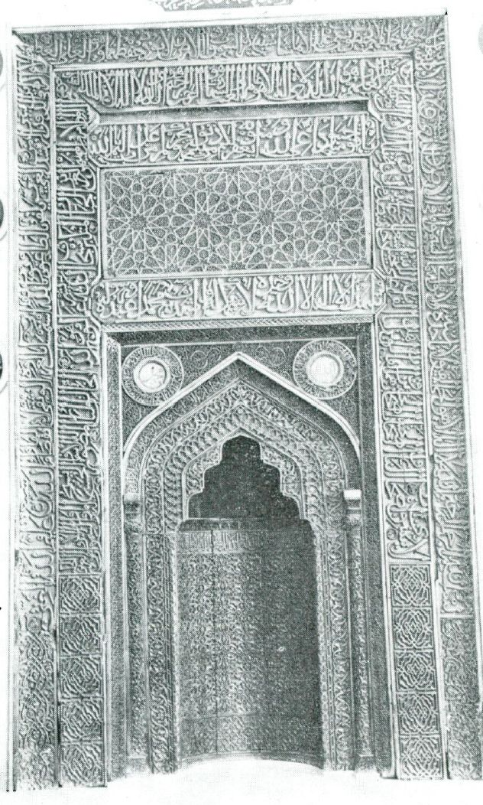
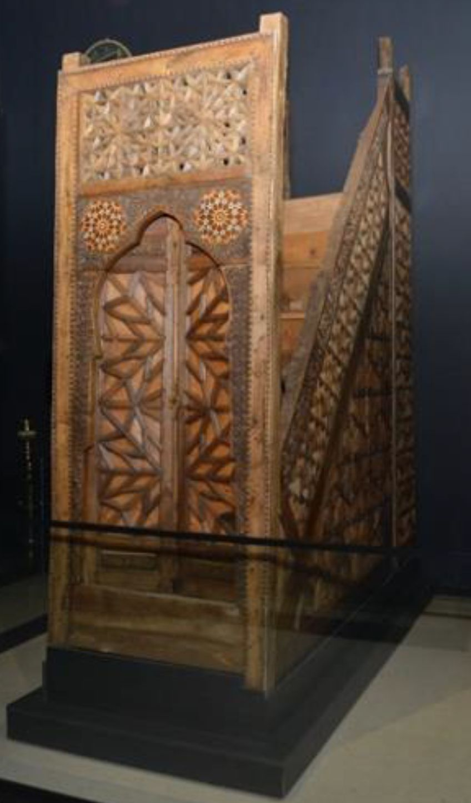
Ahşap mihrap ve minberThe wooden mihrab and minbar
Caminin ahşap oyma mihrabı ve minberi, köyün en özgün eserleridir. 350 cm yüksekliğinde ve 203 cm genişliğindeki mihrap, ceviz levhaların yatay ve dikey ölçülerde kesilip yan yana çakılmasıyla oluşturulmuş; yüzeyler yüksek kabartma ve ajur tekniğiyle oyulmuştur. Şeritler ve madalyonlar boyunca nesih hatlı ayet kuşakları uzanır. Ömür Bakırer’in incelemeleri, bu eserin Anadolu’da 12. yüzyılın ikinci yarısı ile 14. yüzyıl sonu arasından günümüze ulaşmış tek ahşap mihrap olduğunu ortaya koymuştur.
Yaklaşık 2,60 m yüksekliğindeki minberde oyma, hakiki kündekârî, kafes, tarsi ve kakma teknikleri bir arada kullanılmıştır; minberdeki rozetin, kakma tekniğinin Anadolu’daki en erken örneklerinden biri olduğu belirtilmektedir. 2024 yılında yapılan koruma-onarım çalışmaları, minberin yapımında şimşir, ceviz ve karaçam kullanıldığını göstermiştir.
The carved wooden mihrab and minbar are the village’s most singular works. The mihrab, 350 cm high and 203 cm wide, was made from walnut boards nailed side by side, the surfaces then carved in high relief and openwork. Bands of naskh inscription run across the borders and medallions. Ömür Bakırer’s research established that this is the only wooden mihrab in Anatolia to survive from the period between the second half of the twelfth century and the end of the fourteenth.
The minbar, roughly 2.60 m high, combines carving, true kündekârî joinery, lattice work, inlay and marquetry; its rosette is described as one of the earliest examples of the inlay technique in Anatolia. Conservation work in 2024 showed that boxwood, walnut and black pine were used in its construction.
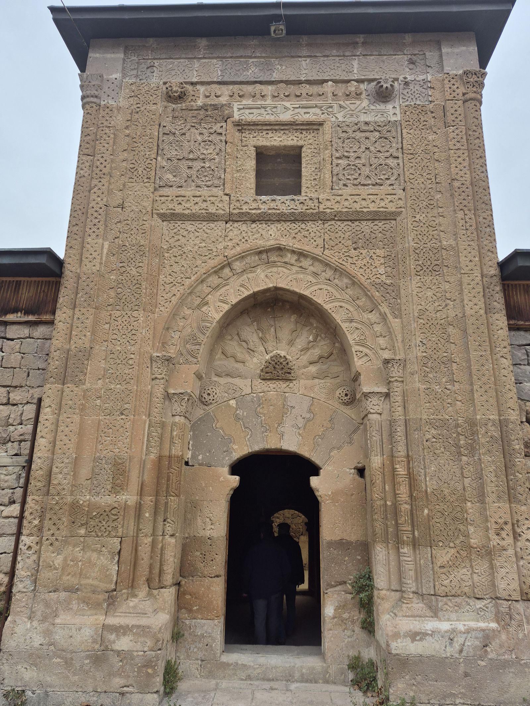
Taşkın Paşa MedresesiTaşkın Paşa Medrese
Köyün girişinde, anayolun doğusunda yer alan medrese, camiyle aşağı yukarı aynı yıllarda yaptırılmıştır. Batı cephe ekseninde, cepheden taşkın ve oldukça yüksek bir taçkapıdan girilir; taçkapı bezemeli sütunçeler ve dört şeritle kuşatılmış, üzerinde bir pencere açıklığı bırakılmıştır. Giriş holünün alçak tutulmuş olması, üzerinde bir odanın bulunduğunu düşündürmektedir.
Holün güneyinde, hem hole hem avluya açılan, bezemeli taş mihraplı bir mescit yer alır. Doğudaki avlu kareye çok yakındır ve üzerinin aydınlık fenerli bir kubbeyle örtülü olduğu düşünülmektedir. Avlunun güneyinde yapı kitlesinden dışa taşırılarak vurgulanmış dört pencereli ana eyvan, kuzeyinde küçük bir eyvan ve çevrelerinde odalar bulunur. Uzun süre yıkık kalan yapı 1993–94 yıllarında onarılmış ve koruyucu bir çatı altına alınmıştır.
The medrese stands at the entrance to the village, east of the main road, built at much the same time as the mosque. Entry is through a tall crown portal projecting from the middle of the west front, framed by decorated colonnettes and four bands and pierced above by a window opening. The low height of the entrance hall suggests that a room stood above it.
South of the hall lies a small prayer room with a decorated stone mihrab, opening both onto the hall and onto the courtyard. The courtyard to the east is very nearly square and is thought to have been covered by a dome with a lantern. On its south side stands the main iwan with four windows, emphasised by being pushed out beyond the mass of the building; on the north side is a smaller iwan, with rooms arranged around both. Long left in ruins, the building was repaired in 1993–94 and given a protective roof.
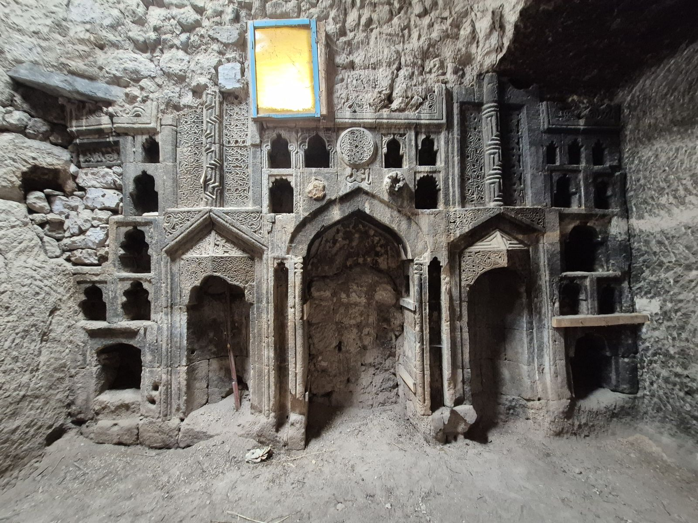
Derviş EviThe Dervish House
Kayaya oyulmuş bu yapının işlevi kesin olarak bilinmemektedir. İçinde kıbleye doğru oyulmuş bir mihrap bulunur; mihrabın her iki yanında ise dışarıya açılan bacalara sahip iki büyük niş yer alır. Bu düzen, mihrabın iki yanında ateş yakıldığını düşündürmektedir. Cephedeki kaya oyma süslemeler dönemin beylik üslubunu andırır; aralarında geyik ve aslanı çağrıştıran figürler de vardır.
Nevşehir Hacı Bektaş Veli Üniversitesi’nin yürüttüğü ve 2025’te kamuoyuna tanıtılan çalışmalar, bugüne kadar literatürde yer almamış olan bu yapının özgünlüğünü koruduğunu ortaya koymuştur. Araştırmacılar, cephe düzenlemesi ve mekân dağılımından hareketle yapının külliye ile aynı dönemde inşa edildiğini belirtmekte; eldeki verilerin, buranın külliyenin banisi Emir Taşkın’ın yaşam alanı olabileceğine işaret ettiğini ifade etmektedir. Bir derviş dergâhı olma ihtimali de hâlâ güçlüdür.
The function of this rock-cut building is not known for certain. Inside there is a mihrab carved towards the qibla, flanked on either side by two large niches with flues opening to the outside — an arrangement suggesting that fires were lit on both sides of the mihrab. The rock-cut ornament on the façade recalls the beylik style of the period and includes figures suggesting a deer and a lion.
Work carried out by Nevşehir Hacı Bektaş Veli University and made public in 2025 showed that this building, which had not previously appeared in the scholarly literature, retains its original character. The researchers hold that the arrangement of the façade and the interior spaces indicate it was built at the same time as the complex, and that the evidence points to its having been the living quarters of the founder, Emir Taşkın. The possibility that it served as a dervish lodge nevertheless remains strong.
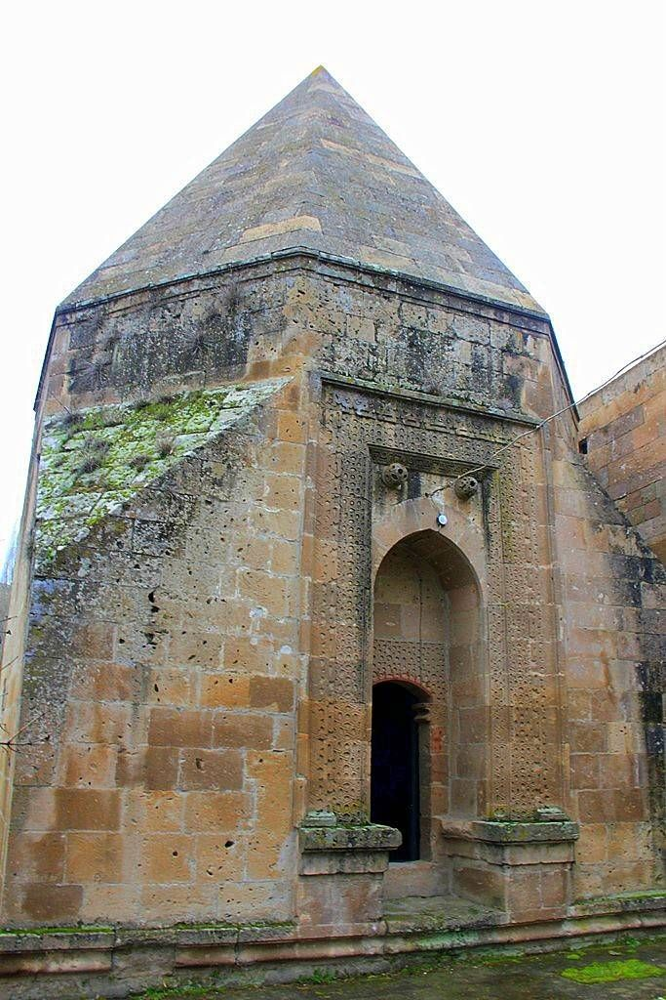
Taşkın Paşa TürbesiTaşkın Paşa Tomb
Türbe, caminin doğusunda, cami avlusu içinde ve caminin doğu duvarına neredeyse bitişik olarak yer alır. Çift katlıdır: doğal kayanın oyulmasıyla oluşturulan beşik tonozlu alt katın ortasında bir sanduka bulunur. Kare planlı üst katın kübik gövdesi, üst köşelerde pahlanarak sekizgen kasnağa dönüşür; içte köşe üçgenleri ve mukarnaslı tromplarla kubbeye geçilir, dışta konik külahla örtülür.
Yapının inşa ya da bani kitabesi yoktur; gelenek onu Taşkın Paşa’ya atfeder. Kare gövdenin üst köşelerde pahlanarak çokgen kasnağa dönüştürüldüğü bu tip, Kırşehir Caca Bey Türbesi ile başlayıp 1327 tarihli Sivrihisar Alemşah Kümbeti ve 1344 tarihli Niğde Gündoğdu Türbesi ile sürer.
The tomb stands east of the mosque, inside its courtyard and almost against the mosque’s east wall. It is built on two levels: the lower storey, cut into the natural rock and covered with a barrel vault, holds a cenotaph in the middle. The cubical body of the square upper storey is chamfered at the upper corners to form an octagonal drum; inside, corner triangles and muqarnas squinches carry the dome, covered externally by a conical roof.
The building has no foundation inscription; tradition attributes it to Taşkın Paşa. The type, in which a square body is chamfered to form a polygonal drum, begins with the Caca Bey Tomb at Kırşehir and continues with the Alemşah Tomb at Sivrihisar of 1327 and the Gündoğdu Tomb at Niğde of 1344.
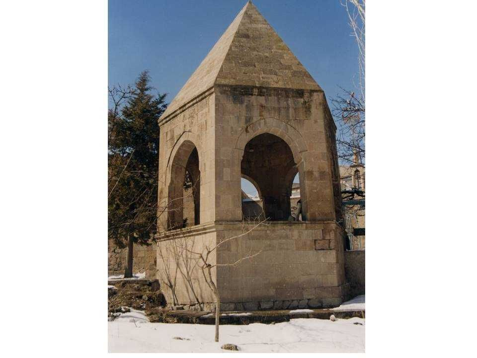
Hızır Bey TürbesiHızır Bey Tomb
Cami avlusunun kuzeydoğusunda yer alan türbe, altıgen bir oturtmalık üzerine altıgen planlı olarak yapılmış bir baldaken yapıdır: her köşedeki ayaklar sivri kemerlerle bağlanmış, aralar açık bırakılmıştır. Güney cephedeki açıklık, iki yönlü beş basamaklı bir merdiven, mukarnaslı konsollar ve iki kabarayla adeta bir taçkapı gibi vurgulanmıştır — bu yönüyle yapı, çoğu tek katlı ve girişi belirsiz olan baldaken türbeler arasında benzersizdir.
Türbe içinde nesih hatlı kitabeler taşıyan mermer sandukalar yer alır. Birincisi Hızır Bey’e aittir ve Ramazan’ın yirmi yedinci günü, Kadir gecesi, 752 senesinde (17 Kasım 1351) vefat ettiğini bildirir. İkincisi İlyas Bey’e ait olup 5 Şevval 752 (25 Kasım 1351) tarihlidir. Üçüncüsü ise Hasan adlı bir çocuğa aittir ve Muharrem 756 (Ocak 1355) tarihini taşır. Bu kişilerin Taşkın Paşa’nın oğulları olduğu kabul edilir.
North-east of the mosque courtyard stands a baldachin building on a hexagonal plan set on a hexagonal base: piers at each corner are linked by pointed arches, and the bays between them are left open. The opening on the south front is emphasised almost like a crown portal, with a five-stepped double stair, muqarnas corbels and two bosses — a feature that makes it unique among baldachin tombs, most of which are single-storeyed with no clearly marked entrance.
The tomb contains marble cenotaphs with naskh inscriptions. The first belongs to Hızır Bey and records his death on the twenty-seventh day of Ramadan, the Night of Power, in the year 752 (17 November 1351). The second belongs to İlyas Bey, dated 5 Shawwal 752 (25 November 1351). The third belongs to a child named Hasan and bears the date Muharram 756 (January 1355). These men are held to have been sons of Taşkın Paşa.
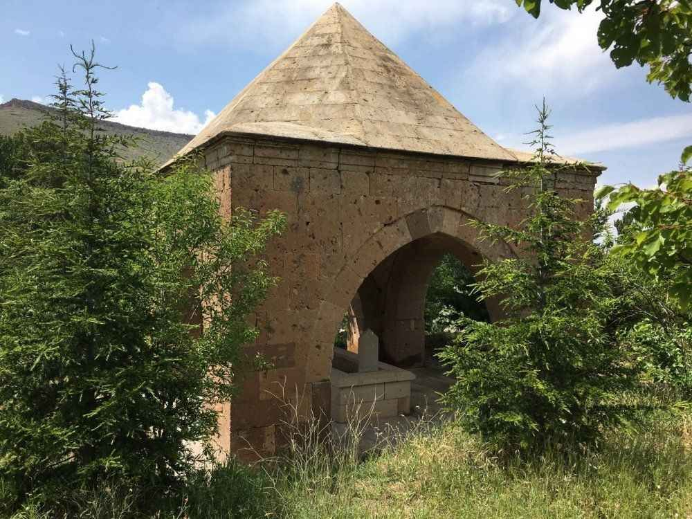
Kesikbaş TürbesiKesikbaş Tomb
Türbe, köyden Şahinefendi’ye giden yol üzerinde, yola yaklaşık 50 metre uzaklıktaki mezarlığın ortasında yer alır. Çevresinde kitabeleri okunamayan eski mezarlar bulunur. Kesme taştan yapılmış olan yapı, dıştan dışa 5,05 × 5,05 m ölçülerinde kare planlıdır; köşelerdeki kalın ayaklar arasındaki sivri kemerlerin araları açıktır. Üzeri içten pandantiflerle geçilen bir kubbe, dıştan dört köşe piramidal külahla örtülüdür.
Ortasında 230 × 85 cm ölçülerinde taş örülü bir sanduka bulunur; sandukanın baş kısmında sarıklı bir taş vardır, ancak üzerinde herhangi bir kitabe yoktur. Yapıda cenazelik bölümü yoktur. İnşa kitabesi bulunmadığından kesin tarihi bilinmemekle birlikte on dördüncü yüzyıla tarihlenir. Kübik formlu olup piramidal külahla örtülmesi, bu tip yapılar arasında onu tek örnek kılar.
The tomb stands in the middle of a cemetery about 50 metres from the road running from the village to Şahinefendi, surrounded by old graves whose inscriptions can no longer be read. Built of ashlar, it has a square plan measuring 5.05 × 5.05 m externally; the bays between the heavy corner piers are spanned by pointed arches and left open. It is covered by a dome on pendentives inside and by a four-sided pyramidal roof outside.
In the centre stands a cenotaph of masonry measuring 230 × 85 cm, with a turban-shaped stone at its head but no inscription. The building has no crypt. Since it carries no foundation inscription its exact date is unknown, but it is dated to the fourteenth century. Its cubical form combined with a pyramidal roof makes it the only example of its kind.
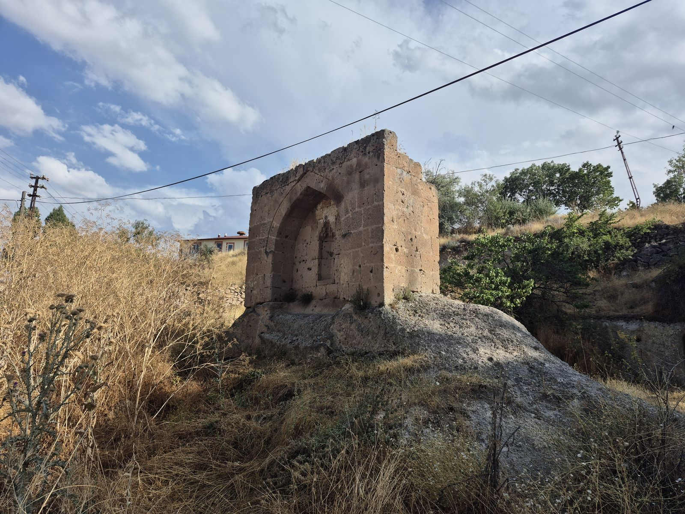
NamazgâhNamazgâh — open-air prayer place
Namazgâh, köyün içinden geçip Şahinefendi’ye uzanan karayolunun batısında yer almaktadır. Açık havada, özellikle yaz aylarında namaz kılmak üzere yapıldığı anlaşılmaktadır.
Konumu tesadüf değildir. Külliye, antik dönemden bu yana Nevşehir yöresini güneye — Soğanlı ve Niğde yönüne — bağlayan yol üzerinde kurulmuştur. Kıbleyi gösteren bu yapı, hem namaz kılanlar hem de yolcular için bir yön göstericidir. Yapımında yörede yaygın olan ignimbirit taşı kullanılmıştır; mimari özellikleri köydeki cami ve türbelere benzediği için onlarla çağdaş kabul edilir.
The namazgâh lies within the village, on the west side of the road that continues to Şahinefendi. It was evidently built for prayer in the open air, particularly during the summer months.
Its position is no accident. The complex was founded on the road that has linked the Nevşehir district southwards — towards Soğanlı and Niğde — since antiquity. Marking the direction of the qibla, the structure served both those at prayer and travellers on the road. It is built of ignimbrite, the stone commonly used in the region; its architectural character resembles that of the mosque and tombs, and it is accepted as contemporary with them.
Kayaya oyulmuş kiliselerRock-cut churches
Köy ve çevresi, Bizans dönemine ait kayaya oyma kiliseler, şapeller ve güvercinliklerle doludur. Bir kısmı bugün ağıl olarak kullanılmakta, bir kısmı ise dışarıdan neredeyse hiç fark edilmemektedir.
The village and its surroundings are full of Byzantine rock-cut churches, chapels and dovecotes. Some are used today as sheepfolds; others are almost impossible to spot from outside.
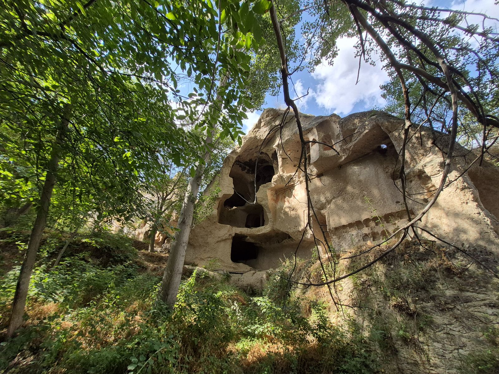
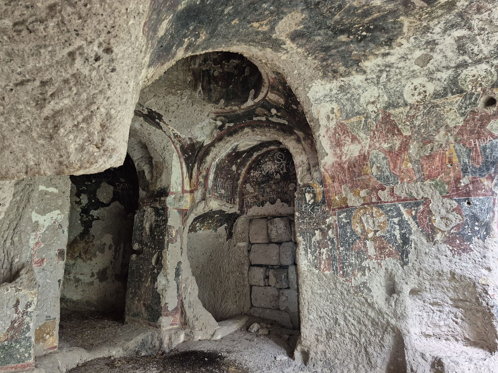
İçeribağ (Damsa) Kilisesiİçeribağ (Damsa) Church
Kilise, İçeribağ Vadisi’nde, büyükçe bir peribacasının içine oyulmuştur ve katlı bir düzene sahiptir. Alt katta bugün ağıl olarak kullanılan bir mekân, orta katta müştemilat odaları, en üst katta ise duvarları ayrıntılı biçimde resimlenmiş kilise yer alır. Girişte, yüksekliği altı metreye ulaşan ve bugün yıkılmış bir mekân bulunur; duvarlarında resim kalıntıları görülür. Yapının altında, zamanla alüvyonla tıkanmış çok sayıda tünel vardır.
Bu yapı, Guillaume de Jerphanion’un 1911 ve 1927 seyahatlerinde “Damsa kilisesi” adıyla tanıttığı ve bezeme programını ayrıntılı biçimde kaydettiği kilisedir: apsis yarım kubbesinde taht üzerinde İsa ve dört İncil sembolü, iki yanda Meryem ile Vaftizci Yahya; nefin doğu bölümünde Müjde, Vaftiz ve Cehenneme İniş; kubbede Göğe Yükseliş ve pandantiflerde dört İncil yazarı; batı bölümünde Konstantinos ve Helena, küçük ölçekli bir Doğuş, Pentikost ve Mahşer sahneleri. Jerphanion bu resimleri, Damsa’nın piskoposluk mertebesine yükseldiği refah döneminin tanığı sayar.
The church is cut into a large fairy chimney in the İçeribağ Valley and is arranged on several levels. The lowest level is used today as a sheepfold, the middle level holds service rooms, and the church itself, its walls elaborately painted, occupies the top. In front of the entrance stands a space, now collapsed, that reached a height of six metres, on whose walls traces of painting can still be seen. A number of tunnels run beneath the building, silted up over time.
This is the church that Guillaume de Jerphanion presented as the “church of Damsa” and whose painted programme he recorded in detail during his travels of 1911 and 1927: Christ enthroned with the four evangelist symbols in the semi-dome of the apse, flanked by the Virgin and John the Baptist; the Annunciation, the Baptism and the Descent into Hell in the eastern part of the nave; the Ascension in the dome with the four evangelists in the pendentives; and, in the western part, Constantine and Helena, a small-scale Nativity, the Pentecost and the Last Judgement. Jerphanion saw them as witnesses to the prosperous period in which Damsa was raised to the rank of a bishopric.
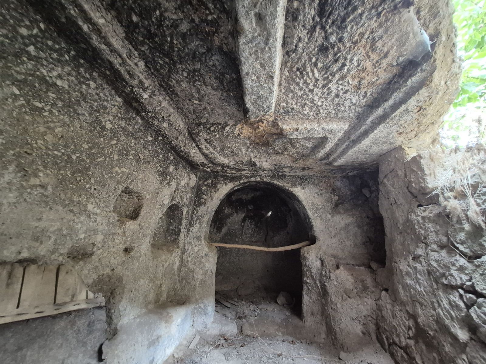
Haçlı ŞapelThe Cross Chapel
Şapel, İçeribağ Kilisesi’nin 10 metre kuzeyindedir. Dışarıdan görülmesi neredeyse imkânsız bir konumdadır ve halihazırda güvercinlik işlevi görmektedir; içine ancak tavanından inilerek girilebilmektedir.
Yapının en önemli ayrıntısı tavanındaki bezemedir: haçın üst kollarını birleştiren kubbeli bir kabartma haç. Aynı haç tipi köydeki 3 Nolu Kilise’de de bulunur; bu ortaklık, iki yapının aynı geleneğe ve muhtemelen aynı döneme ait olduğunu düşündürmektedir.
The chapel lies 10 metres north of the İçeribağ Church. Its position makes it almost impossible to see from outside, and it currently serves as a dovecote; it can be entered only by climbing down through its ceiling.
Its most important feature is the decoration on the ceiling: a relief cross whose upper arms are joined by a dome. The same type of cross is found in Church No. 3 in the village, and this shared motif suggests that the two buildings belong to the same tradition and probably to the same period.
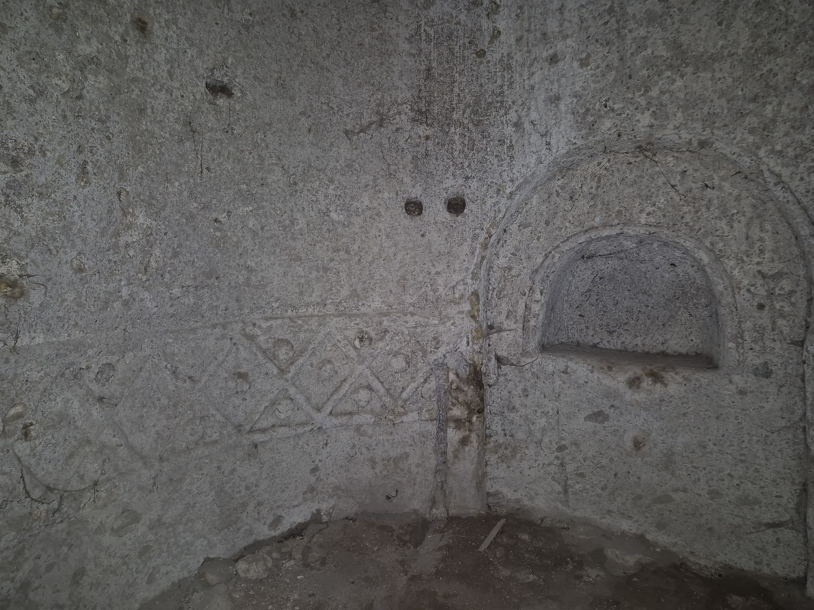
1 Nolu KiliseChurch No. 1
Köy içindeki bu kayaya oyma yapıya, bir odanın içinden geçilerek ulaşılır. Yaklaşık 20 m² büyüklüğündeki mekânda net bir apsis bulunmaz; yalnızca apsisin olması beklenen bölgede özel bir niş yer alır. Yapı içinde bir adet haç işareti görülür.
Duvarlarda kaya oyma süslemeler dikkat çeker: baklava dilimleri ve içlerinde daireler bulunan kabartma bezemeler. Apsisin bulunmayışı, girişin bir başka mekândan sağlanması ve süsleme programının alışılmışın dışında olması, yapının bir kilise mi yoksa daha erken bir pagan tapınağı mı olduğu sorusunu açık bırakmaktadır.
This rock-cut building inside the village is reached by passing through a room. In the space of roughly 20 m² there is no clearly defined apse; there is only a distinctive niche where the apse would be expected. A single cross sign can be seen inside.
Rock-cut ornament on the walls attracts attention: lozenges and relief decoration with circles inside them. The absence of an apse, the fact that the entrance is through another space, and the unusual decorative programme leave open the question of whether this was a church or an earlier pagan sanctuary.
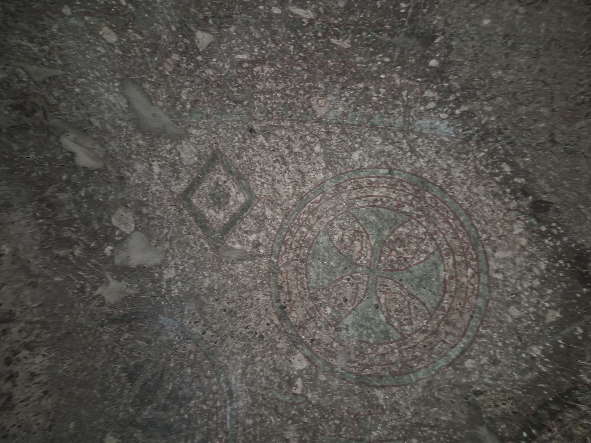
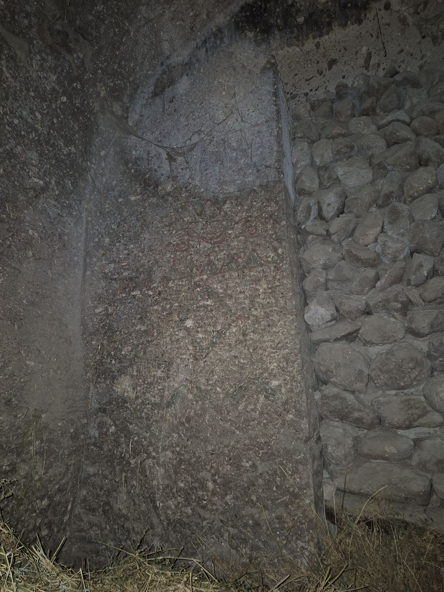
2 Nolu KiliseChurch No. 2
Köy içindeki büyük bir peribacası konisinin içine oyulan bu kiliseye doğrudan dışarıdan girilir; asıl giriş kapısı sonradan kapatılmıştır. Yapı, 1 Nolu Kilise ile bitişik durumdadır.
Bu mekânın kilise olduğuna dair işaretler sağlamdır. Tavanda ve duvarlarda, kırmızı ve yeşil renklerle boyanmış büyük haçlar ile daha sade motifler yer alır. Buna karşılık yapının apsisi tespit edilememiştir.
Cut into the cone of a large fairy chimney inside the village, this church is entered directly from outside; its original doorway was blocked at a later date. It adjoins Church No. 1.
The evidence that this space was a church is sound. Large crosses painted in red and green, together with simpler motifs, appear on the ceiling and walls. Its apse, however, has not been identified.
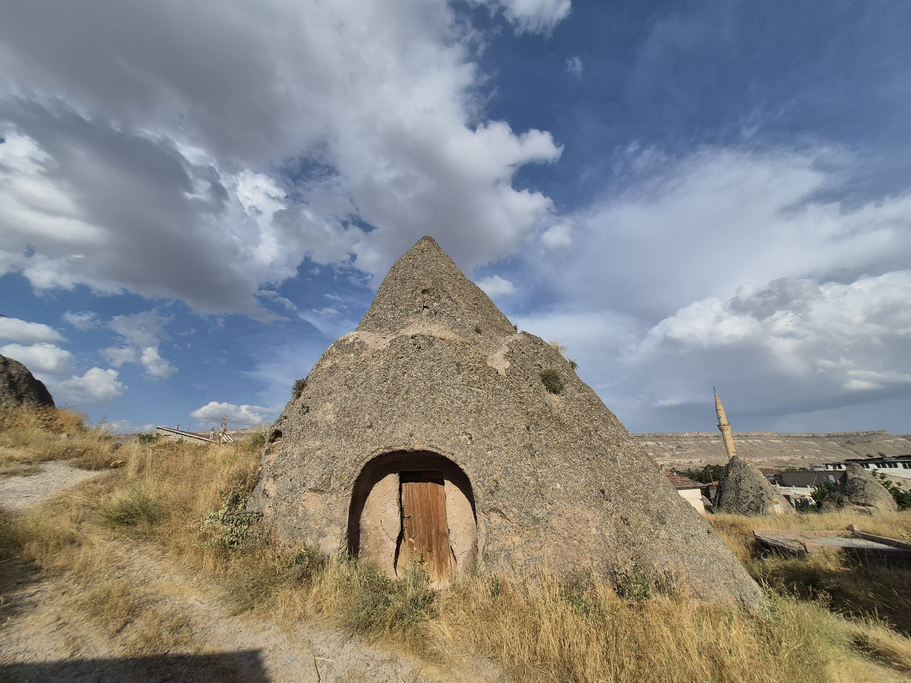
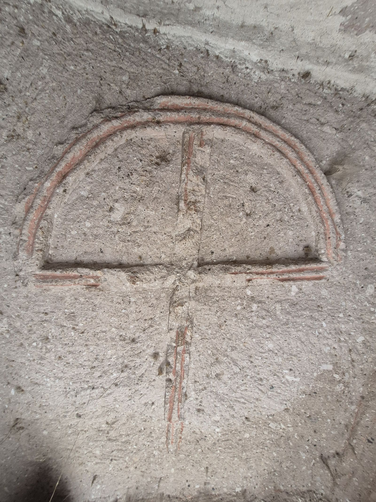
3 Nolu KiliseChurch No. 3
Köyün kuzey sınırında, bir peribacasının içine oyulmuş olan kiliseye batı tarafındaki kapıdan girilir. Yaklaşık 5 × 5 m ölçülerinde, yan odaları bulunan küçük bir yapıdır ve bugün ağıl olarak kullanılmaktadır.
En dikkat çekici özelliği tavanındaki kubbeli haç kazımasıdır; oldukça iyi korunmuş olan bu bezemede haçın üst kollarını birleştiren kubbe cenneti simgeler. Aynı haç tipine Haçlı Şapel’de de rastlanır. Kilise içinde belli belirsiz boyalı resim kalıntıları vardır; apsisin sağ tarafındaki iz basit bir İsa figürü olabilir.
Cut into a fairy chimney on the northern edge of the village, this church is entered through a door on its west side. It is a small building measuring roughly 5 × 5 m with side rooms, and is used today as a sheepfold.
Its most striking feature is the incised domed cross on the ceiling, very well preserved; in this motif the dome joining the upper arms of the cross symbolises paradise. The same type of cross is found in the Cross Chapel. Faint traces of painted decoration survive inside, and the mark to the right of the apse may be a simple figure of Christ.
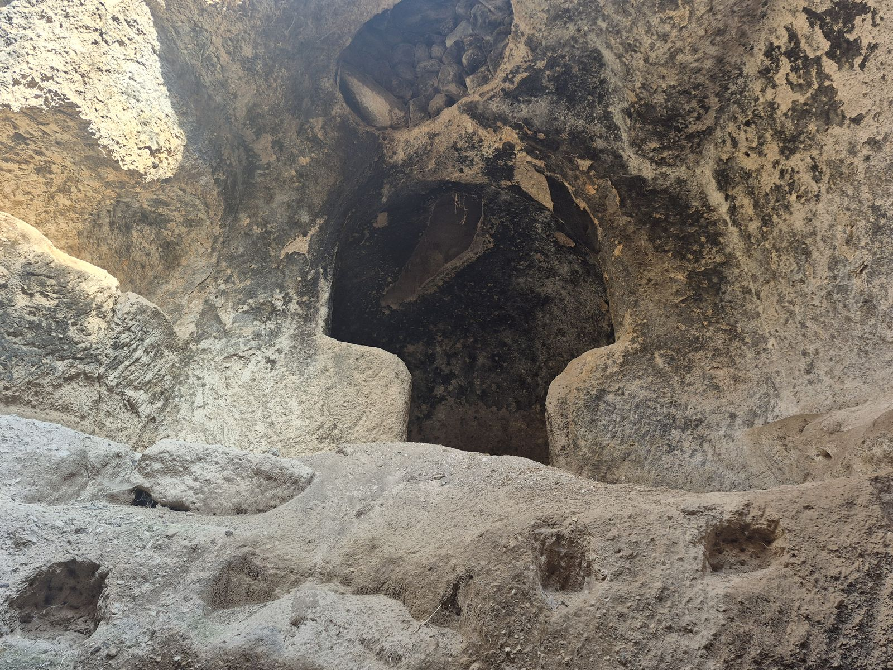
4 Nolu KiliseChurch No. 4
Kilise, İçeribağ Vadisi’nin ana yol girişinin sol tarafında yer alır. Vadiye girenlerin karşılaştığı ilk dini yapı olması bakımından konumu dikkat çekicidir.
Yapı büyük oranda tahrip olmuştur; buna karşılık apsisi sağlam kalmış ve isten kararmıştır. Bu kararma, mekânın kilise olarak kullanımı sona erdikten sonra uzun süre barınak ya da ağıl olarak kullanıldığına işaret eder.
This church stands on the left-hand side of the main road entrance to the İçeribağ Valley. Its position is notable in that it is the first religious building visitors meet on entering the valley.
The building is largely destroyed; its apse, however, survives intact and is blackened with soot. This blackening indicates that the space was used for a long period as a shelter or a fold after its use as a church had ended.
İçeribağ Vadisiİçeribağ Valley
İçeribağ Vadisi, köyün hemen yanı başında uzanan ve Taşkınpaşa’nın Bizans dönemi mirasını en yoğun biçimde barındıran alandır. Vadi boyunca yükselen peribacalarının içine oyulmuş kiliseler, şapeller, müştemilat odaları ve güvercinlikler, yüzyıllar boyunca sürmüş bir yerleşim ve tarım hayatının izlerini taşır. Vadinin adının işaret ettiği gibi, bu topraklar tarih boyunca bağcılığa da ev sahipliği yapmıştır.
Vadinin en önemli yapısı katlı düzeniyle öne çıkan İçeribağ (Damsa) Kilisesi’dir; onun 10 metre kuzeyinde Haçlı Şapel, ana yol girişinin solunda ise 4 Nolu Kilise yer alır. Kilisenin altında uzanan ve zamanla alüvyonla tıkanmış çok sayıda tünel, vadinin yeraltında da bir ağ oluşturduğunu göstermektedir. Haritadaki yeşil hat, vadi boyunca uzanan yaklaşık 800 metrelik yürüyüş güzergâhını gösterir.
The İçeribağ Valley runs immediately beside the village and holds the greatest concentration of Taşkınpaşa’s Byzantine heritage. Churches, chapels, service rooms and dovecotes cut into the fairy chimneys that rise along the valley carry the traces of centuries of settlement and agriculture. As the name suggests — İçeribağ means “the inner vineyard” — these lands have also supported viticulture throughout their history.
The most important building in the valley is the İçeribağ (Damsa) Church, notable for its multi-level arrangement; the Cross Chapel lies 10 metres to its north and Church No. 4 on the left of the main road entrance. The many tunnels running beneath the church, silted up over time, show that the valley formed a network underground as well. The green line on the map traces the roughly 800-metre walking route along the valley.
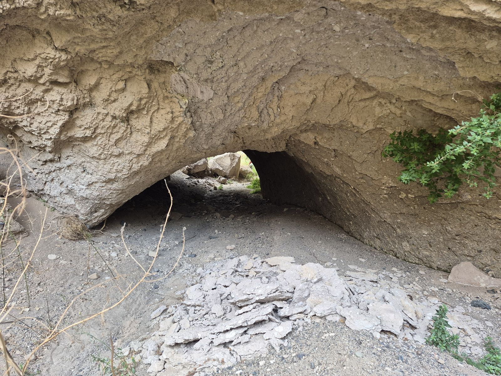
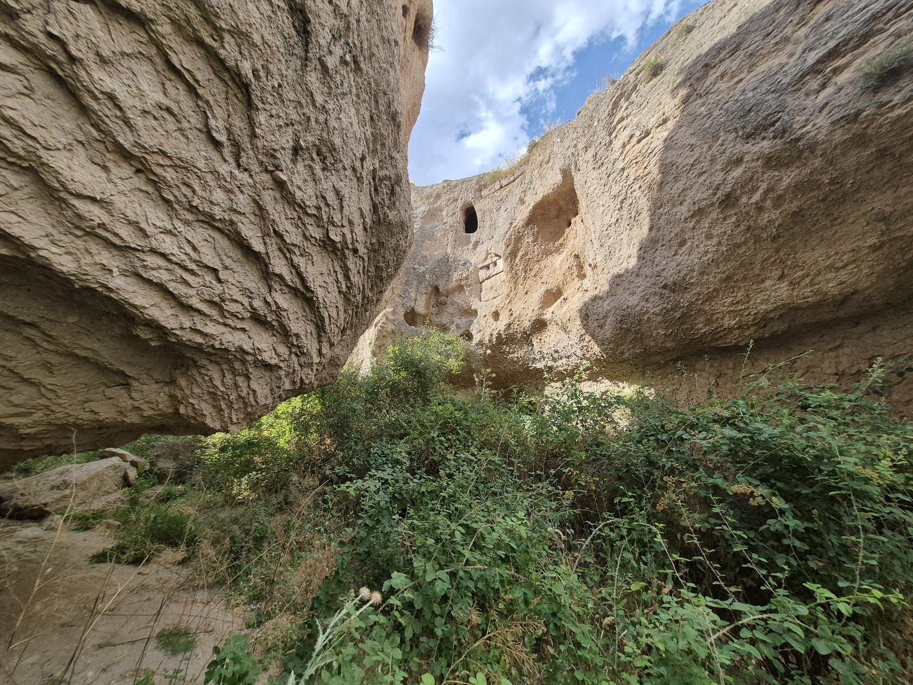
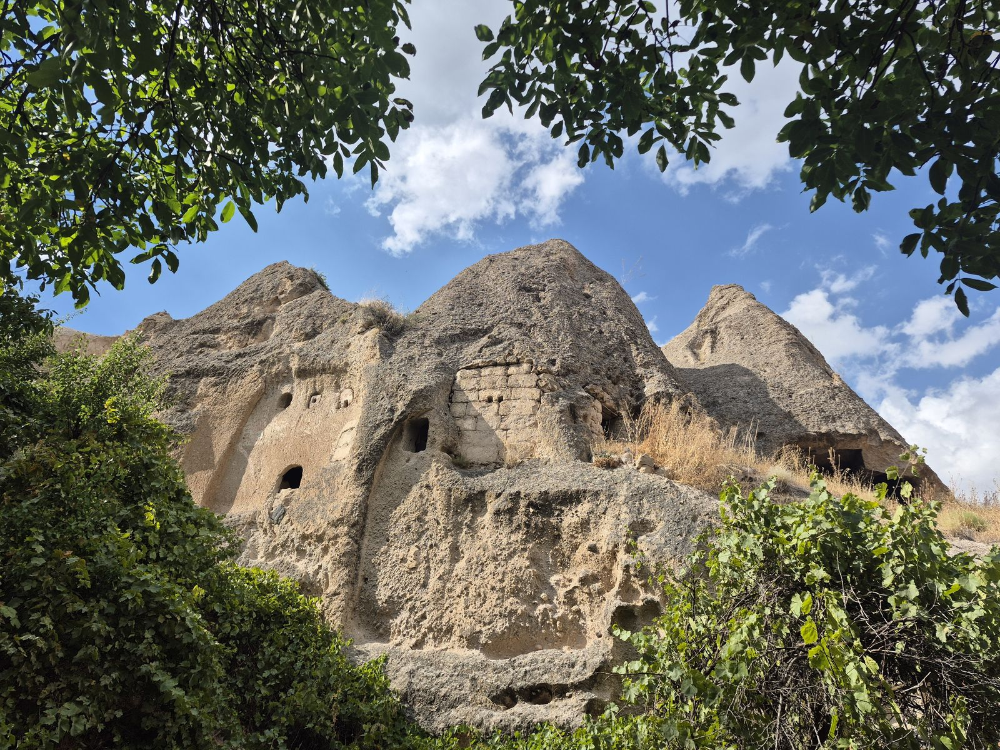
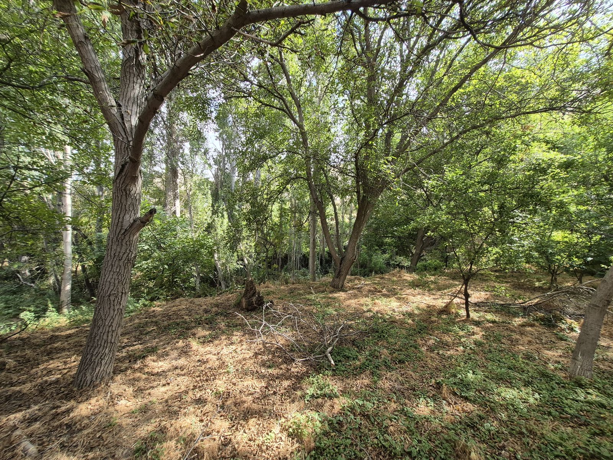
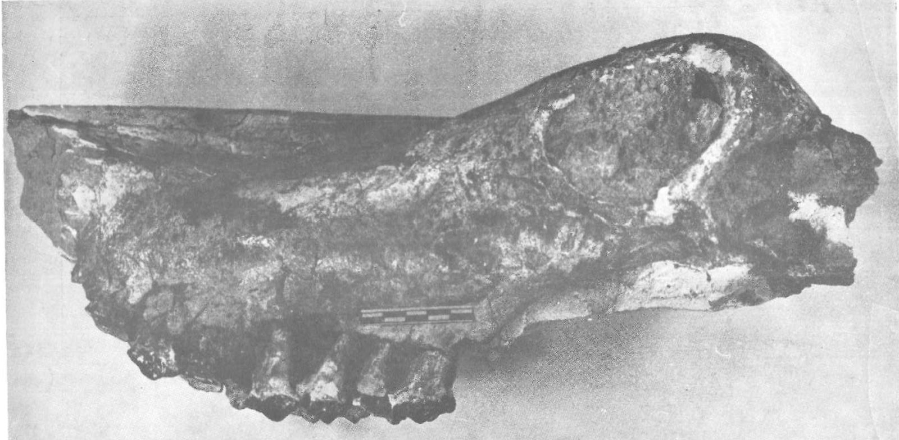
Fosil yataklarıThe fossil beds
Taşkınpaşa ve çevresi, yalnızca tarihî değil paleontolojik açıdan da önemli bir yerleşimdir. Ankara Üniversitesi Dil ve Tarih-Coğrafya Fakültesi’nden Prof. Dr. Muzaffer Süleyman Şenyürek, 1952 ve 1953 yıllarında köy çevresindeki fosil içeren tüf yataklarında kazı yürütmüştür. Köyün batı kenarının hemen üstündeki Bayramkalesi mevkiinde bir kafatası ile alt çene dişleri, aynı yerde iki de aşık kemiği bulunmuştur. Köyün güneybatısındaki Kızılasma deresi ile Cemil ve Taşkınpaşa arasındaki Paşabağı mevkiinde de zürafagillere ait uzuv kemikleri ele geçmiştir.
Bulunan kafatası ve dişler, zürafagiller familyasından Samotherium majori türüne aittir. Taşkınpaşa faunası ayrıca üç parmaklı at Hipparion gracile, yaban domuzu Sus erymanthius, antilopgillerden Tragocerus amaltheus ile ceylan ve gergedangillere ait kalıntıları içerir. Bu topluluk, yatakların Pontiyen çağa — Alt Pliyosen dönemine — ait olduğunu göstermektedir. Böylece köy, bu coğrafyada zürafa ve gergedan sürülerinin dolaştığı bir savan manzarasının da tanığıdır.
Taşkınpaşa and its surroundings are significant not only historically but also palaeontologically. Professor Muzaffer Süleyman Şenyürek of the Faculty of Languages, History and Geography at Ankara University excavated the fossil-bearing tuff deposits around the village in 1952 and 1953. At Bayramkalesi, just above the western edge of the village, he found a skull and lower teeth, along with two astragali from the same spot. Limb bones belonging to giraffids were also recovered from the Kızılasma gully south-west of the village and from Paşabağı, between Cemil and Taşkınpaşa.
The skull and teeth belong to Samotherium majori, a member of the giraffe family. The Taşkınpaşa fauna also includes the three-toed horse Hipparion gracile, the wild boar Sus erymanthius, the antelope Tragocerus amaltheus and remains of gazelles and rhinoceroses. This assemblage places the deposits in the Pontian — the Lower Pliocene. The village is thus also a witness to a savannah landscape across which herds of giraffes and rhinoceroses once roamed.
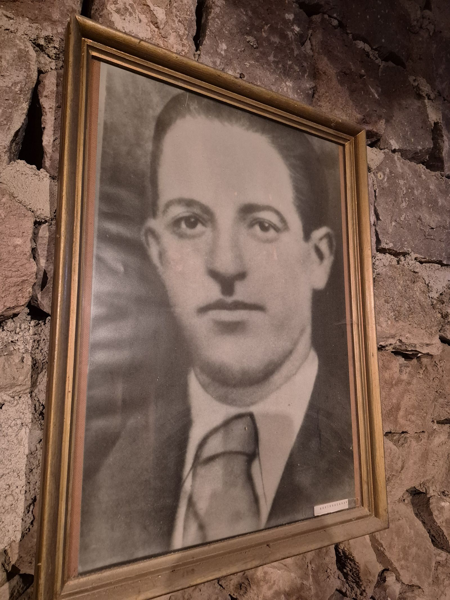
Refik BaşaranRefik Başaran
Türk halk müziğinin usta saz ve ses sanatçılarından Refik Başaran, 1907 yılında o zamanki adıyla Damsa olan Taşkınpaşa Köyü’nde doğdu. İlkokulu köyünde okudu, küçük yaşta babasını kaybetti. Saz çalmaya on beş yaşında başladı; on yedi yaşındayken, 1924’te aynı köyden Fadime Hanım ile evlendi. Aile geleneğinde anlatıldığına göre soyadı “Başaran”, 1934’te Ankara’da Atatürk’ün huzurunda verdiği başarılı bir konserin ardından bizzat Atatürk tarafından verilmiştir.
Yılın büyük bölümünü İstanbul ve Ankara’da geçiren, kalan aylarında köyüne dönüp türkü besteleyen Başaran, İstanbul’da Odeon plak şirketi için kayıtlar yaptı. Sazını daha iyi öğrenmek için köyün karşısındaki “Karşı Yazı” mevkiindeki bir mağaraya çekilip on iki gün orada kaldığı anlatılır. 1941’de Ankara’nın Ayaş ilçesine yerleşti ve 26 Mayıs 1947’de Abdülselam Dağı eteklerinde vefat etti. 1997 yılında naaşı ailesinin girişimiyle köyüne nakledildi ve köyün güneyindeki Hayrat mevkiine defnedildi.
Refik Başaran, one of the master saz players and singers of Turkish folk music, was born in 1907 in the village then called Damsa and now Taşkınpaşa. He attended primary school in the village and lost his father while still young. He began playing the saz at fifteen and married Fadime Hanım, from the same village, at seventeen in 1924. Family tradition holds that the surname “Başaran” — meaning “the one who succeeds” — was given to him by Atatürk himself in 1934, after a successful concert performed in his presence in Ankara.
Başaran spent most of the year in Istanbul and Ankara and returned to his village in the remaining months to compose folk songs; in Istanbul he recorded for the Odeon record company. It is said that in order to master the saz he withdrew to a cave in the place called “Karşı Yazı” opposite the village and stayed there for twelve days. He settled in Ayaş near Ankara in 1941 and died on 26 May 1947 on the slopes of Mount Abdülselam. In 1997 his remains were brought back to his village and buried at Hayrat, south of Taşkınpaşa.
KronolojiTimeline
-
Pontiyen çağPontian ageAlt Pliyosen. Köy çevresindeki tüf yataklarında zürafagiller, üç parmaklı atlar, antiloplar ve gergedanlar.Lower Pliocene. Giraffids, three-toed horses, antelopes and rhinoceroses in the tuff deposits around the village.
-
Bizans dönemiByzantine periodYerleşim Tamisos adıyla bir piskoposluk merkezi olarak anılır; vadideki kaya kiliseleri bu döneme aittir.The settlement is known as Tamisos and serves as an episcopal see; the rock-cut churches date from this time.
-
13511351Taşkın Paşa Kumartaş Köyü’nü satın alır. Aynı yıl Hızır Bey (17 Kasım) ve İlyas Bey (25 Kasım) vefat eder.Taşkın Paşa purchases the village of Kumartaş. In the same year Hızır Bey (17 November) and İlyas Bey (25 November) die.
-
13531353Taşkın Paşa’nın Damsa’daki vakfına ait vakfiye düzenlenir.The deed of endowment for Taşkın Paşa’s foundation at Damsa is drawn up.
-
13551355Hasan adlı çocuk vefat eder; Hızır Bey Türbesi’ndeki üçüncü sanduka.A child named Hasan dies; the third cenotaph in the Hızır Bey Tomb.
-
13691369İstanbul Patrikhanesi’nin bir kararı Tamisos piskoposunu Mokissos’a nakleder.A decision of the Patriarchate of Constantinople transfers the bishop of Tamisos to Mokissos.
-
14761476Karaman Eyaleti Vakıfları Fihristi’nde cami ve zaviye vakıfları kayıtlıdır.The register of the pious foundations of Karaman records the endowments of the mosque and the lodge.
-
1820–211820–21Yazlık mescidin kuzeydoğu köşesindeki köşk minare yapılır.The kiosk minaret is built at the north-east corner of the summer prayer hall.
-
19071907Refik Başaran köyde doğar.Refik Başaran is born in the village.
-
1911–19271911–1927Guillaume de Jerphanion köyü inceler; cami, medrese ve kilisenin ilk bilimsel tanımlarını yayımlar.Guillaume de Jerphanion studies the village and publishes the first scholarly descriptions.
-
19401940Caminin ahşap mihrabı ve minberi Ankara Etnografya Müzesi’ne nakledilir.The mosque’s wooden mihrab and minbar are transferred to the Museum of Ethnography in Ankara.
-
19471947Refik Başaran Ayaş yakınlarında vefat eder.Refik Başaran dies near Ayaş.
-
1952–19531952–1953Muzaffer Süleyman Şenyürek fosil yataklarında kazı yapar; Samotherium majori kalıntıları bulunur.Muzaffer Süleyman Şenyürek excavates the fossil beds; remains of Samotherium majori are found.
-
1961–19621961–1962Cami için onarım raporu hazırlanır; Hızır Bey Türbesi’nin üst örtüsü kapatılır.A repair report is prepared for the mosque; the roof of the Hızır Bey Tomb is closed.
-
1993–19941993–1994Medrese restore edilir ve koruyucu bir çatı altına alınır.The medrese is restored and given a protective roof.
-
19971997Refik Başaran’ın naaşı köyüne nakledilir.Refik Başaran’s remains are brought back to his village.
-
20242024Minberin koruma-onarım çalışmaları ve üç boyutlu belgelemesi tamamlanır.Conservation of the minbar and its three-dimensional documentation are completed.
-
20252025Derviş Evi ilk kez ayrıntılı biçimde incelenir ve kamuoyuna tanıtılır.The Dervish House is studied in detail and made public for the first time.
KaynakçaReferences
- Altın, A. (2019). Taşkın Paşa (Damsa) Külliyesi içerisinde yer alan Hızır Bey Türbesi’ndeki sandukalar. Selçuk Üniversitesi Türkiyat Araştırmaları Dergisi, (45), 383–408.
- Altın, A. (2022). Taşkınpaşa Külliyesi’nin süslemelerinde yapılan restorasyon hataları. Nevşehir Hacı Bektaş Veli Üniversitesi Sosyal Bilimler Enstitüsü Dergisi, 12(2), 870–884.
- Bakırer, Ö. (1971). Ürgüp’ün Damsa Köyü’ndeki Taşkın Paşa Camii’nin ahşap mihrabı. Belleten, 35(139), 367–382.
- Çiftçioğlu, İ. (2001). Ürgüp’ün Taşkınpaşa (Damsa) Köyü’nde Karamanlı devri eserleri. Afyon Kocatepe Üniversitesi Sosyal Bilimler Dergisi, 3(2), 17–22.
- Eravşar, O. (1993). Ürgüp ve çevresindeki Türk-İslam devri yapıları [Yüksek lisans tezi]. Selçuk Üniversitesi.
- Jerphanion, G. de. (1925–1942). Une nouvelle province de l’art byzantin: Les églises rupestres de Cappadoce (Cilt 1–2). Paul Geuthner.
- Sapmaz, G. (2000). Şen olasın Ürgüp: Refik Başaran, hayatı, türküleri. Ankara.
- Şenyürek, M. S. (1954). A study of the remains of Samotherium found at Taşkınpaşa. Ankara Üniversitesi Dil ve Tarih-Coğrafya Fakültesi Dergisi, 12(1–2), 1–32.
- Uykur, R. (2003). Ürgüp Damsa Köyü Taşkın Paşa Külliyesi [Yüksek lisans tezi]. Hacettepe Üniversitesi.
- Uzar, N. S. (2007). Nevşehir Ürgüp ilçesinin Damsa Köyü Taşkın Paşa Medresesi. Vakıflar Dergisi, 30, 251–270.
- Yıldırım Altun, C. ve Cura, M. (2024). Taşkınpaşa camisi minberi koruma ve onarım çalışmaları. Turkish Studies, 19(3), 1359–1380.